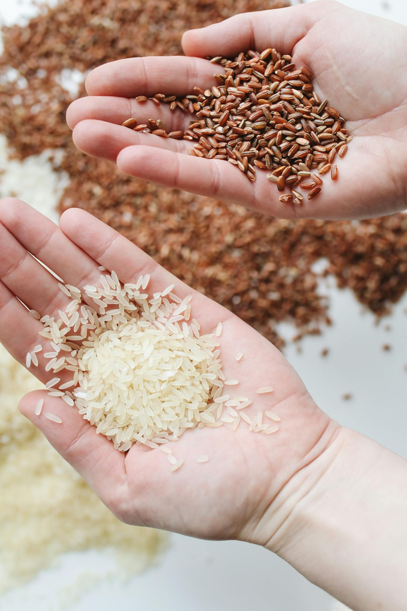
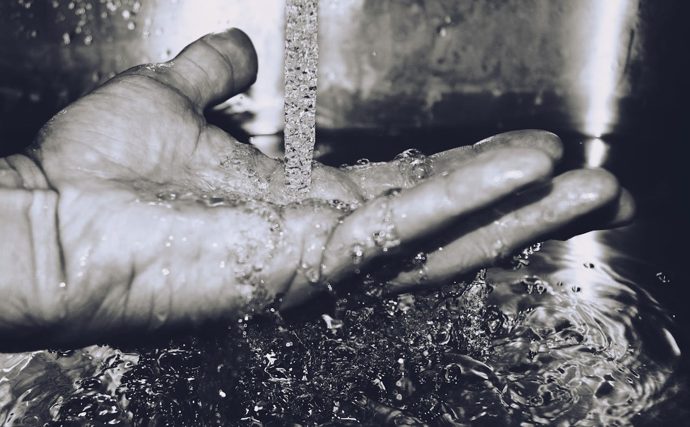
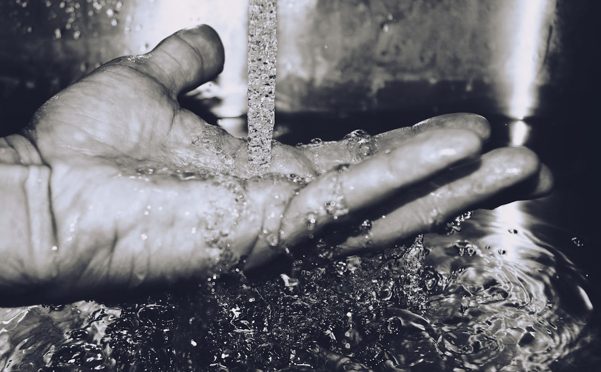

Carbohydrates
.jpg)
Carbohydrates are organic macromolecules that are made of carbon,hydrogen, and oxygen atoms and are used.
Carbohydrates, or carbs, are sugar molecules.
Carbohydrates are organic macromolecules that are made of carbon,hydrogen, and oxygen atoms and are used.
Carbohydrates, or carbs, are sugar molecules.
Proteins are large, complex molecules that play many critical roles in the body.
They do most of the work in cells and are required for the structure, function, and regulation of the body's tissues and organs.
.jpg)
Fats are a type of nutrient that you get from your diet.
The fats you eat give your body energy that it needs to work properly.
.jpg)
any of a group of organic compounds which are essential for normal growth and nutrition and are required in small quantities in the diet because they cannot be synthesized by the body.
a pill containing a specified amount of a particular vitamin or vitamins, taken as a dietary supplement.
.jpg) 

a colourless, transparent, odourless liquid that forms the seas, lakes, rivers, and rain and is the basis of the fluids of living organisms.
water is a source of life and sustainance for human exixtent.
Minerals are found in foods like cereals, bread, meat, fish, milk, dairy, nuts, fruit (especially dried fruit) and vegetables.
We need more of some minerals than others. For example, we need more calcium, phosphorus, magnesium, sodium, potassium and chloride than we do iron, zinc, iodine, selenium and copper.